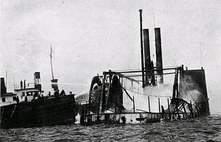

Crew Safety
Safety was a constant issue for steamboats. Some vessels, particularly the later steel-hulled ones, had perfect safety records. This was not always true, and the lives of both passengers and crew were often endangered. Many instances of crewmen falling off vessels and drowning occurred. Crew did not wear life preservers, as is now required on all riverine vessels. For example, in the case of the Mizpah, the engineer went on deck, apparently slipped, fell overboard, and was drowned. Another case was that of Captain O.A. Anderson, a Port Townsend pilot who fell from a ladder in rough seas in late December, 1912, when trying to board the steamship Setos from the pilot launch.

Fire
A great danger to all wooden boats was fire. One of the worst disasters in all shipping history was the fire in New York harbor of the General Slocum on June 15, 1904, in which more than 1,000 people died. While the General Slocum was a large vessel, similar sized wooden boats were on Puget Sound and the Columbia River (for example, Alaskan, Olympian, and in particular Yosemite, which routinely boarded more than 1,000 passengers), where on a busy day or a crowded excursion such a death toll could have occurred. Hunter, one of the premier historians of steamboats on the Mississippi-Ohio-Missouri river systems, well summarized the causes of fire in wooden steam craft:
Thin floors and partitions, light framing and siding, soft and resinous woods, the whole dried out by sun and wind and impregnated with oil and turpentine from paint, made the superstructure of the steamboat little more than an orderly pile of kindling wood.
The cause of fire can be readily seen when one considers that in the midst of this pile of oil-soaked wood was placed the biggest furnace that could be afforded by the owner, capped with an enormous smokestack to generate the maximum amount of draft for the fire. Added to this was the risk, in the days before electric light, associated with oil and kerosene lanterns and other sources of ignition. Many vessels were destroyed by fire, two examples being Mizpah and Urania.
Collisions
Collisions were also too common, when steamboats continued to operate in fog or night, without radar or other modern navigation aids, and often caused greater loss of life than fire. Unlike fire, which often could be fought until the vessel reached a beach where passengers and crew could evacuate, collisions came suddenly. Where a substantial difference existed between the size or construction of the vessels, such as steel against wooden hull, destruction could be quick. Thus, on the night of November 18, 1906, the small, lightly built passenger steamer Dix (130 tons), designed specifically for the very short run across Elliott Bay from Seattle to Alki Point, collided with the much larger steam schooner Jeanie. The night was clear, and the collision seems to have been caused by an error of the Dix's unlicensed mate, who had the wheel while the captain, consistent with the practice of the day, collected the fares. Though the collision speed was small, Dix was lightly built and top-heavy; she quickly heeled over, filled with water, and sank in 103 fathoms, taking 45 people down with her, including her mate. The wreck was so deep that no bodies could be recovered. 24 42–144 Similarly, but less tragically, the wooden sternwheeler Multnomah was rammed (also in Elliott Bay, the scene of much marine traffic) by the much larger, steel-hulled, express passenger Iroquois on October 28, 1911, sinking Multnomah in 240 feet of water, but with no one killed.
Loss of the Clallam
By 1904, the causes of shipping losses were well-known and safety measures had been established by law, and enforced by the U. S. Steamboat Inspection Service. Each vessel's certificate stated how many lifeboats, fire axes, and similar items were supposed to be carried. Yet, that year had the tragic loss of life on the Clallam, which left Seattle bound for Victoria on January 8, 1904, under the command of Capt. George Roberts. A storm came up as she neared Victoria, and she started taking on water. When her pumps failed (apparently they brought water into the vessel rather than evacuating it), her boiler fire was extinguished by the rising water, and she lost all power, save for an emergency sail. The captain ordered three lifeboats launched, and put into them the women and children, yet no ship’s officers went on board to command the boats in the rough seas. All three boats were lost with all the passengers on them. Clallam stayed afloat long enough to be found by rescuers, but even so, 54 people died. Serious ship handling and mechanical defects seemed to have caused the loss of the Clallam, and the license of her master, George Roberts, a 29-year veteran steamboat man, was suspended, and that of her chief engineer was revoked. 00 8–71 The supply of signalling rockets also seemed to be insufficient.
Safety Crackdown
Following the Clallam disaster, a crackdown on violations of the steamboat safety regulations began, which seems to have been widely ignored. At Port Townsend, following a surprise inspection of the steamer Garland on February 6, 1904, these defects were found:
- No relieving tackle on the tiller (this was necessary to steer the vessel in case of wheel failure or loss of the main steering ropes through fire)
- No ladders or stairways to the hurricane deck where the fire buckets and lifeboats were kept
- Fewer fire buckets than required by the vessel’s certificate, and no water in many of what fire buckets were on board
- Fewer fire axes than required by her certificate
- Life raft had no designation on it of the number of persons it was supposed to carry in an emergency
- Lifeboats and launching gear are generally in poor condition
- Similar conditions were found on the same day on the Prosper, and to a lesser degree on the Alice Gertude and the Whatcom, although they were referred for special boiler inspections. The inspections and fines assessed on these four vessels were just part of a campaign by the inspectors to enforce the regulations on all steam craft operating in Puget Sound. By February 17, 1904, 16 more vessels, including some well-known ones, had been inspected, found deficient, and fined for similar reasons, and in addition failure to maintain adequate fog horns and not providing sufficient written instructions to passengers as to the location of life preservers. Vessels found deficient included the well-known George E. Starr, Rosalie, and Athlon.
All of the many defects found by the steamboat inspectors on Puget Sound were typical of the lax standards of the day, which contributed to the horrible death toll in the loss by fire of the General Slocum. This loss, which occurred while the General Slocum was packed with a crowd for an excursion, produced swift results on Puget Sound, as inspectors strictly counted the total numbers of persons boarded on each vessel, and gave notice that remissions of fines for equipment defects would be no more. (By custom, heavy fines imposed on steamboats would be remitted upon a showing of compliance by the vessel's owners.)